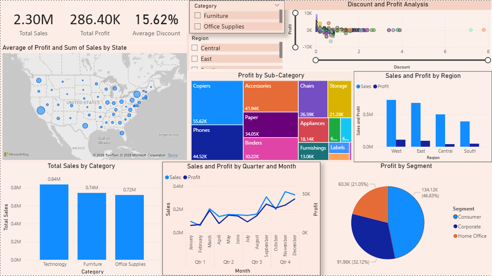

Improving retail decision-making through data visualisation.
Project overview
This project turns 9,994 raw transactions from the Sample Superstore dataset (Kaggle, 2023) into a single Power BI dashboard, giving sales, finance, marketing, and operations teams a shared view they can act on quickly. The build moves through five stages — collecting the data, preparing it in Power Query, designing seven visuals plus two slicers, analysing what they show, and reporting the resulting decisions.
The dashboard

Total sales, total profit, and average discount, surfaced up front so any stakeholder can read business performance at a glance.
Technology leads at $0.84M, ahead of Furniture ($0.74M) and Office Supplies ($0.72M) — but revenue alone hides a pricing problem in Furniture.
Q4 is consistently the strongest period for both sales and profit, driven by seasonal demand; Q1 is consistently the weakest.
California, New York, and Texas lead; the Central region shows visibly smaller bubbles and consistently weaker performance.
Copiers, Phones, and Accessories are the largest and most profitable segments. Tables and Bookcases lag well behind.
West ranks first on both measures; Central is weakest overall; East sells well but converts that into lower profit than expected.
A clear negative relationship: discounts above roughly 20% regularly tip orders into a loss.
Consumer drives 46.83% of profit ($134.12K), ahead of Corporate at 32.12% ($91.98K) and Home Office at 21.05% ($60.3K).
Findings
It's the highest-profit segment, while Furniture's low returns point to a pricing problem worth fixing.
Sales and profit peak reliably in the final quarter, which is where marketing spend and stock planning should concentrate.
The West region leads on every measure; the Central region trails on all of them.
The scatter chart shows this isn't a marginal effect — it's a consistent driver of loss.
Nearly half of all profit (46.83%) comes from Consumer, making retention there the highest-leverage lever available.
Business evidence-based decisions
Prioritise Technology and re-examine Furniture's pricing and cost structure.
Plan and fund Q4 marketing and stock capacity ahead of the October–December peak.
Apply the West region's approach to lift performance in the Central region.
Cap discounts at 20% to stop orders tipping into a loss.
Invest in Consumer-segment loyalty and retention, given its share of total profit.
Skills & tools